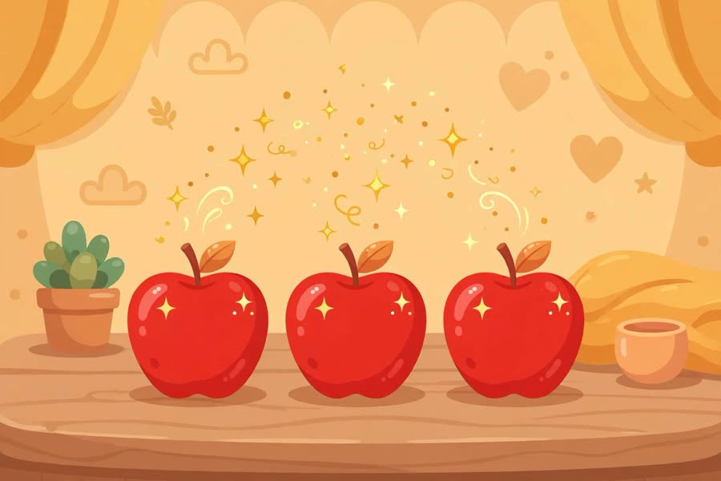
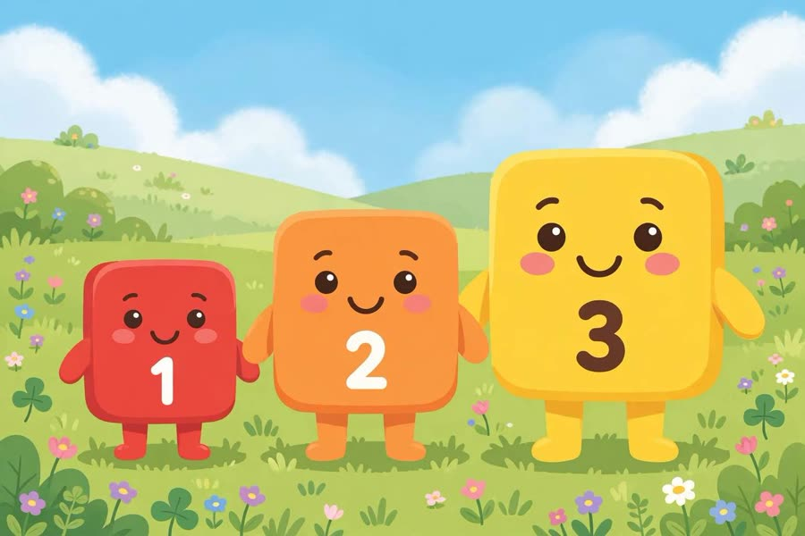

📖 剧情简介
三号变魔术数苹果：一、二、三，还要排排队比大小！
Three does apple magic: counting to three, lining up and comparing sizes!
🎭 角色
一号 One、二号 Two、三号 Three
（舞台，幕布拉开 / On stage, the curtain opens）
3
Three三号
Welcome to my magic show!
欢迎来到我的魔术表演！
3
Three三号
One apple!
一个苹果！
（变出一个苹果 / An apple appears）
1
One一号
Two apples!
两个苹果！
2
Two二号
Three apples! One, two, three!
三个苹果！一、二、三！

Three apples! One, two, three!
3
Three三号
Line up, everybody! One, two, three!
大家排排队！一、二、三！

Line up, everybody! One, two, three!
（一号、二号、三号排成一队 / One, Two and Three line up in order）
1
One一号
I'm the smallest!
我最小！
3
Three三号
And I'm the biggest!
我最大！
2
Two二号
And I'm in the middle!
我在中间！
3
Three三号
Three is made of two and one! Watch!
三是由二和一组成的！看！
（三号分成二号和一号 / Three splits into Two and One）
A
All大家
One, two, three! Magic!
一、二、三！真神奇！